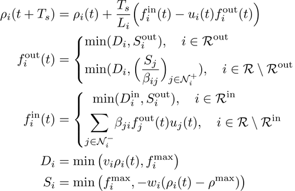
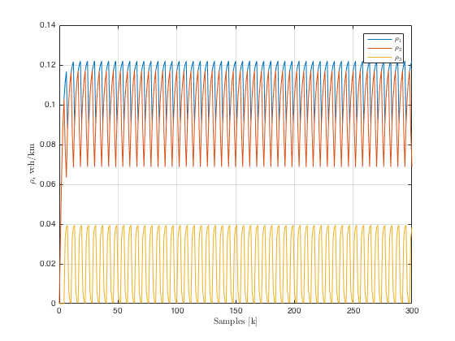

ITS Session 2: Control of large scale Traffic Networks
Contents
Signalized CTM
Let us recall the model.

In the model, the notation corresponds to:

Network construction
In order to setup the network it is first required to indicate the network to topology. Network are characterized by a set of nodes (Roads) a set of edges . This description of the network can be done via an incidence matrix , which represents a relationship between nodes:
Let us consider a simple intersection. We caracterize the graph in two ways:
1. Adjacency matrix
It is a matrix with elements:
- if road is immediate downstream to road . (Physical connection is required)
- 0 otherwise
Another information can be obtained from the road graph:

2. Incidence matrix
It's a matrix with elements:
- 1 if intersection is downstream road ,
- -1 if intersection is upstream road ,
- 0 otherwise
In this case the network to be designed is a matrix array of the following shape.
nRows = 4; nCols = 4; [incMat, adjMat] = buildManhattanMultipleInOut(nRows,nCols); nRoads = size(incMat,1);
Parameter setup
Setting up the parameters
Ts = 15; % sampling time Tc = 90; % cycle time of traffic lights T = Tc/Ts; % cycle time/ sampling time Li = 500; % cell length [m] maxSpeed = 50/3.6; % free flow speed [m/s] maxDensity = 0.125; % maximum density [veh/m] maxFlow = 0.55; % maximum flow [veh/s] rhoC = maxFlow/maxSpeed; % critical density congSpeed = abs(maxFlow/(rhoC - maxDensity)); % w type = 'RoadSignFifoCTM';% model type
Network object
netNoControlSCTM = Net(Ts, T, (1:nRoads)');
Assign the incidence matrix to the object
netNoControlSCTM.iM = incMat;
Assign the adjacency matrix to the object
netNoControlSCTM.turnings= adjMat;
Set parameters to the network
netNoControlSCTM.initialize(Li, maxSpeed, congSpeed, maxDensity, ...
maxFlow, rhoC, type)
netNoControlSCTM
netNoControlSCTM =
Net with properties:
iM: [40x16 double]
rA: []
lM: [40x1 double]
turnings: [40x40 double]
sampleTime: 15
period: 6
roads: [1x40 RoadSignFifoCTM]
lights: [1x40 Light]
isControlled: 1
Traffic lights setup
Setup the flag so the network is run under manual control
netNoControlSCTM.isControlled= 0; setTrafficLightsManhattanMultipleIO(netNoControlSCTM,nCols); netNoControlSCTM.lights(1)
ans =
Light with properties:
id: 1
period: 6
values: [1 1 0 0 0 0]
Let's check the complementary traffic lights. For a particular intersection:
upstream = find(incMat(:,1)==1); figure(1),clf stem(1:T,netNoControlSCTM.lights(upstream(1)).values,'b'), hold on, stem(1:T,netNoControlSCTM.lights(upstream(2)).values,'r'), grid on, lgn = legend('$u_1$','$u_5$'); set(lgn,'interpreter','latex'); ylim([0,2]) xlabel('Discrete time [t]','interpreter','latex') ylabel('$u_i(t)$','interpreter','latex') title('Traffic lights intersection $1$','interpreter','latex')
Simulation parameters
Setup for simulation parameters:
nCycles = 50; time = [1 T*nCycles]; % number of iterations Sout = maxFlow*ones(nRoads,time(end)); % burstValue = 0.4; t0 = time(end)*0.1; tf = time(end)*0.8; Din = inputDemandManhattan(netNoControlSCTM, burstValue,... t0, tf, time(end)); %
Verify the dynamic profile of demands for the system:
figure(2),clf imagesc(1:time,1:nRoads,Din) xlabel('Samples [k]','interpreter','latex') ylabel('Road ID','interpreter','latex') title('External Demand $D^{in}$','interpreter','latex') colorbar
It can be verified that the external demands are non-zero just for the input roads in the network
netNoControlSCTM.enteringRoads
ans =
1
3
5
18
23
36
38
40
Simulation
Use the method simul in the object Net to simulate the system.
[totDensitySCTM,~,...
totLightsSCTM,~,~] = netNoControlSCTM.simul(time,zeros(1,nRoads),Din,Sout);
figure(3),clf imagesc(time(1):time(end),1:nRoads,totDensitySCTM) map = retrieve_color_heatmap; colormap(flipud(map)); colormap(jet) colorbar xlabel('Samples [k]','interpreter','latex') ylabel('Road ID','interpreter','latex') title('Density $\frac{veh}{m}$','interpreter','latex')

Merge example
In order to validate we are going to create a merge of two roads as in:
Network setup
incMatrixMerge = [1;1;-1]; adjMatrixMerge = [0 0 1;0 0 1;0 0 0]; nRoadsMerge = size(incMatrixMerge,1);
Parameters
Ts = 15; % sampling time Tc = 90; % cycle time of traffic lights T = Tc/Ts; % cycle time/ sampling time Li = 250; % cell length [m] maxSpeed = 50/3.6; % free flow speed [m/s] maxDensity = 0.125; % maximum density [veh/m] maxFlow = 0.55; % maximum flow [veh/s] rhoC = maxFlow/maxSpeed; % critical density congSpeed = abs(maxFlow/(rhoC - maxDensity)); % w type = 'RoadSignFifoCTM';% model type
Network inizialization
netMerge = Net(Ts, T, (1:nRoadsMerge)');
Assign the incidence matrix to the object
netMerge.iM = incMatrixMerge;
Assign the adjacency matrix to the object
netMerge.turnings = adjMatrixMerge;
Set parameters to the network
netMerge.initialize(Li, maxSpeed, congSpeed, maxDensity, ...
maxFlow, rhoC, type)
netMerge
netMerge =
Net with properties:
iM: [3x1 double]
rA: []
lM: [3x1 double]
turnings: [3x3 double]
sampleTime: 15
period: 6
roads: [1x3 RoadSignFifoCTM]
lights: [1x3 Light]
isControlled: 1
netMerge.isControlled = 0; duty = 1/3; netMerge.lights(1).values = [ones(1,1),zeros(1,5)]; netMerge.lights(2).values = [zeros(1,4),ones(1,2)]; netMerge.lights(3).values = [ones(1,6)];
Setup for simulation parameters:
nCycles = 50; time = [1 T*nCycles]; % number of iterations SoutMerge = maxFlow*ones(nRoadsMerge,time(end)); DinMerge = []; DinMerge(1,:) = 300*ones(1,time(end)); DinMerge(2,:) = 700*ones(1,time(end)); DinMerge(3,:) = zeros(1,time(end)); [totDensityMerge,~,... totLightsMerge,~,~] = netMerge.simul(time,zeros(1,nRoadsMerge),DinMerge,SoutMerge);
Plot the density
figure(4),clf plot((time(1)-1):time(end),totDensityMerge') grid on xlabel('Samples [k]','interpreter','latex') ylabel('$\rho_i$ veh/km','interpreter','latex') lgn = legend('$\rho_1$','$\rho_2$','$\rho_3$'); set(lgn,'interpreter','latex');